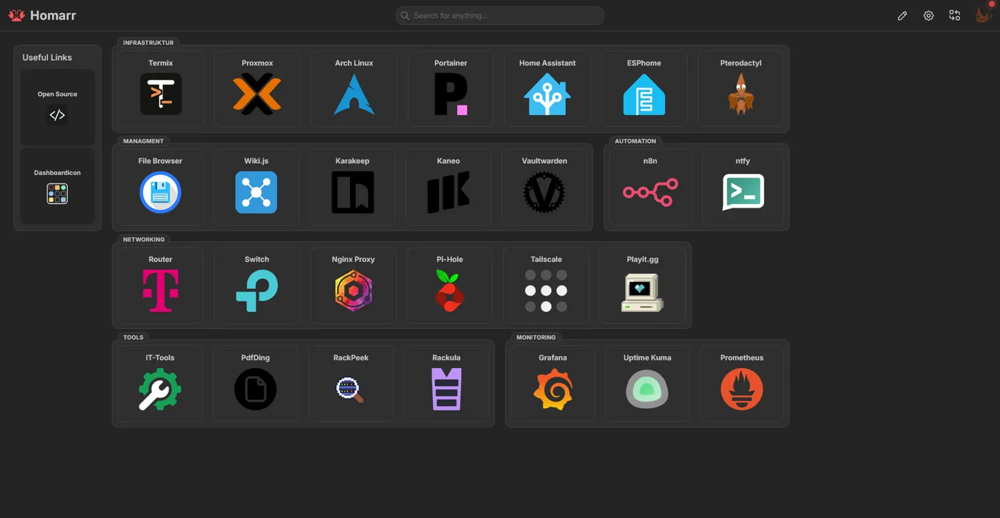
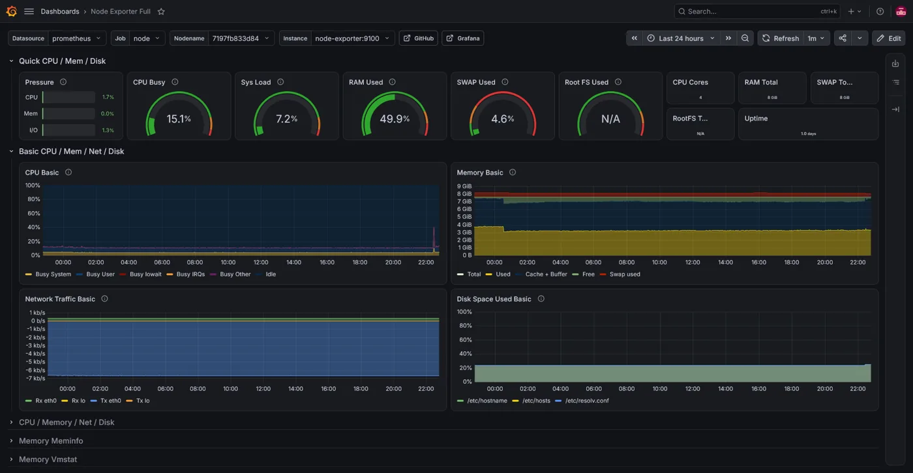
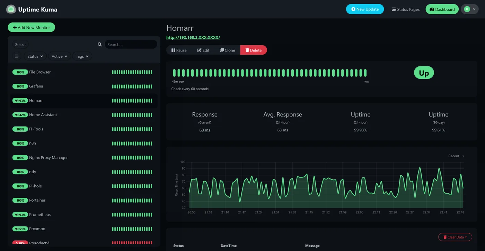
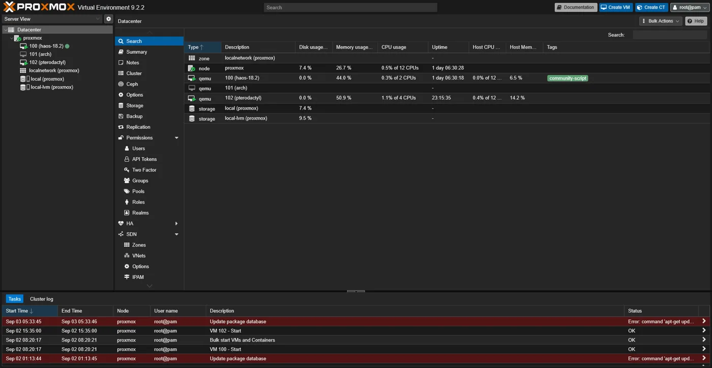
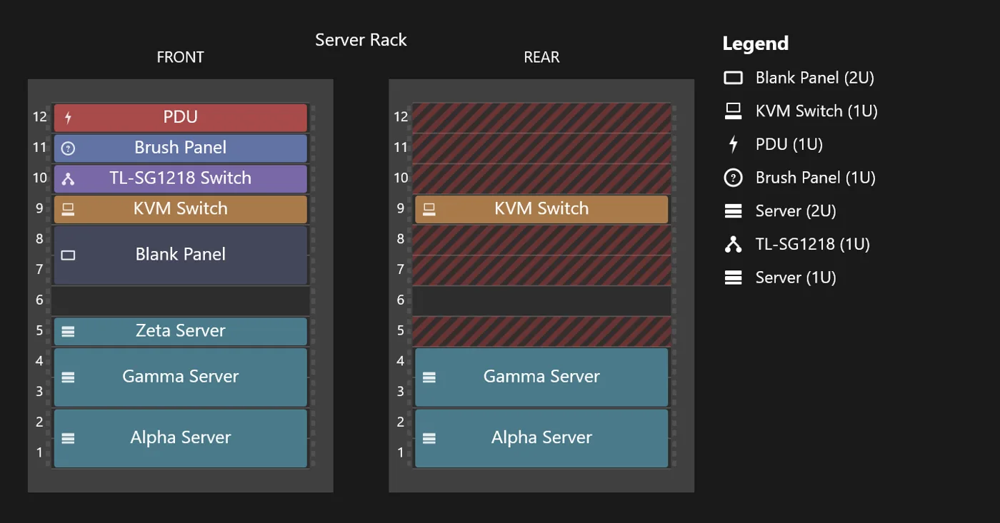
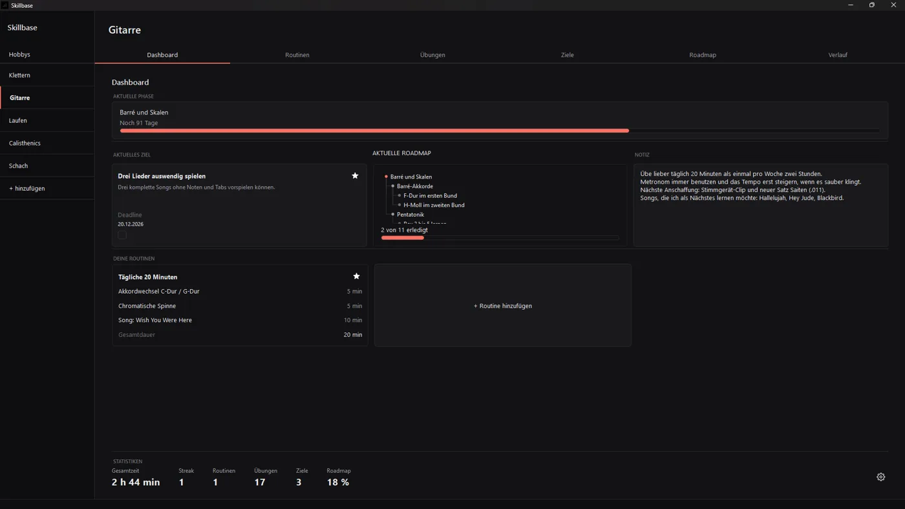
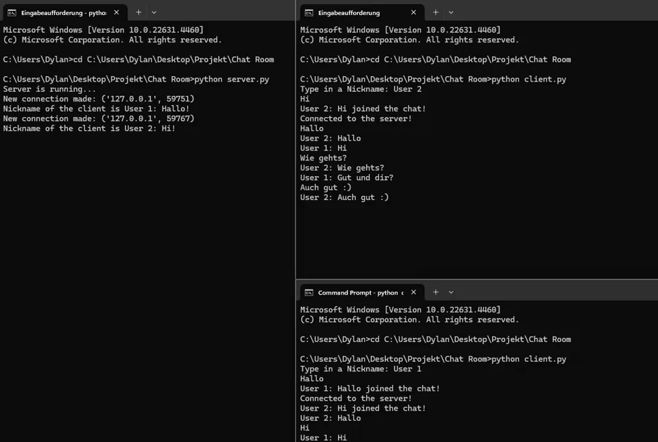
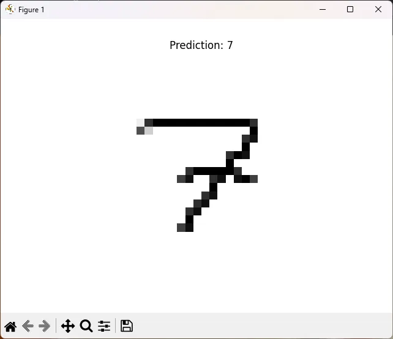
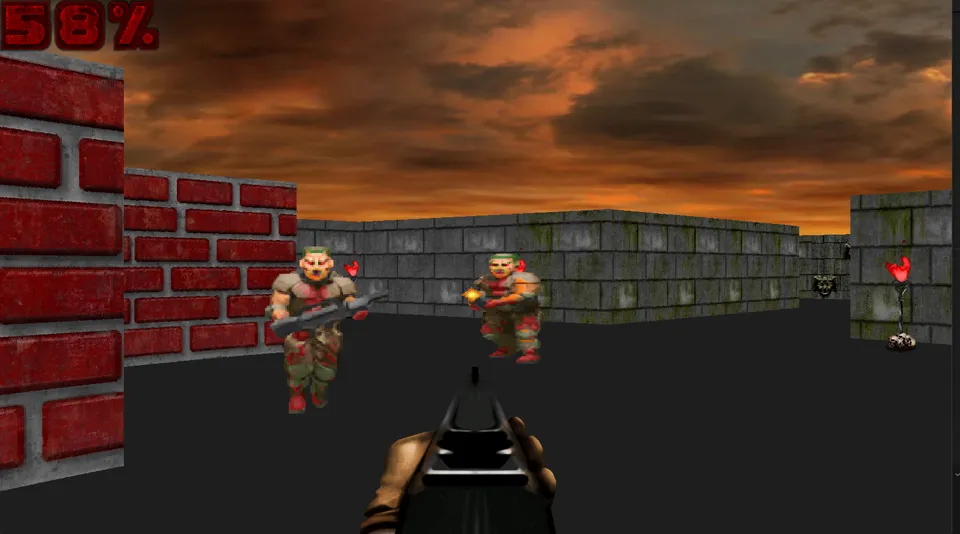
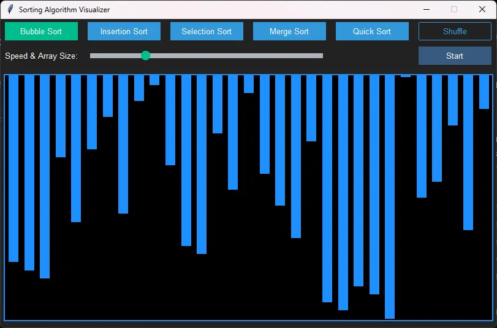

Monitoring
Prometheus sammelt Metriken aller Hosts, von Containern und Proxmox-VMs. Grafana visualisiert sie, Uptime Kuma prüft die Erreichbarkeit der Dienste und meldet Ausfälle über ntfy.
Informatik Technischer Systeme · HAW Hamburg
Bevor ich Informatik studiert habe, war ich vier Jahre Anlagenmechaniker. Fehler systematisch eingrenzen und Anlagen am Laufen halten mache ich heute mit Servern statt mit Heizungen: in meinem eigenen Homelab mit Proxmox, Docker und Monitoring.
Selbst gehostete Infrastruktur, die ich seit 2024 parallel zum Studium aufbaue und betreibe. Sie ist meine Lernumgebung für Linux, Netzwerke, Virtualisierung und Automatisierung und gleichzeitig eine echte Plattform für Dienste wie Home Assistant, Gameserver, Monitoring und interne Tools.
Doku auf GitHub →
Virtualisierung & Compute
Netzwerk- & Service-Infrastruktur
Storage & Backup
Prometheus sammelt Metriken aller Hosts, von Containern und Proxmox-VMs. Grafana visualisiert sie, Uptime Kuma prüft die Erreichbarkeit der Dienste und meldet Ausfälle über ntfy.
Alle Dienste laufen über lesbare lokale Domains hinter dem Nginx Proxy Manager, mit TLS über ein mkcert-Wildcard-Zertifikat. Fernzugriff nur über Tailscale, ganz bewusst ohne Portweiterleitung.
Ansible richtet neue Hosts reproduzierbar ein, z. B. die Docker-Installation über SSH. n8n verbindet Monitoring-Ereignisse mit Benachrichtigungs-Workflows.
Die gesamte Infrastruktur ist in Wiki.js dokumentiert und wird automatisch in ein Git-Repository gesichert. Hardware und Beziehungen bilde ich in RackPeek und Rackula ab.
Keine offenen Ports ins Internet, eigene Zugangsdaten pro Dienst, Isolation über eigene VMs, Freigaben über den Reverse Proxy nur wo nötig. Automatische Updates nur gezielt, nicht für alles.




Incident 01
Incident 02
Incident 03

Desktop-Anwendung · 2026
Eigenständig entwickelte Desktop-App zur Hobbyverwaltung mit Dashboard, Zielen, Routinen, Übungen und hierarchischen Roadmaps.
3D-Renderer von Grund auf: lädt Modelle und stellt sie mit eigener Projektions- und Rotationsmathematik dar, ohne Grafik-API.
Code ansehen →
Chat-Server und Client auf Socket-Ebene. Mehrere Clients verbinden sich gleichzeitig, jeder in einem eigenen Thread.
Code ansehen →
Neuronales Netz, trainiert auf MNIST, erkennt handgeschriebene Ziffern aus eigenen Bildern.
Code ansehen →
Pseudo-3D-Engine nach dem Vorbild klassischer Shooter der 90er, mit Raycasting, Texturen, Sprites und Gegnern.
Code ansehen →Echtzeit-Fraktal-Renderer mit parallelem Rechnen. Zoom, Auflösung und Iterationen lassen sich live anpassen.
Code ansehen →
Desktop-App, die fünf Sortierverfahren Schritt für Schritt animiert, mit einstellbarer Geschwindigkeit.
Code ansehen →2025 – heute
HAW Hamburg
Schnittstelle von Informatik, Elektrotechnik und Systemtechnik: systemnahe Programmierung, Rechnernetze, Betriebssysteme, Echtzeitsysteme, Mikrocontroller und Sensorik.
2022 – 2024
Berufsoberschule ITECH BS14, Hamburg
Schwerpunkte Mathematik, Informatik und Automatisierungstechnik, u. a. mit einer sensorgesteuerten Bierbrauanlage mit Datenbankanbindung und einem Webshop mit PHP und MySQL.
2018 – 2022
HSE-Haustechnik GmbH, Hamburg · Ausbildung & Beruf
Installation, Wartung und Instandhaltung von Sanitär- und Heizungsanlagen. Analyse und Behebung technischer Fehler, technische Zeichnungen, Druck- und Dichtheitsprüfungen.
2025 – heute
Vertretung studentischer Interessen gegenüber Fakultät und Hochschule, Organisation von Veranstaltungen.
2025 – heute
Planung und Durchführung der Einführungswoche, Unterstützung von Erstsemestern beim Studienstart.
Fragen zu einem Projekt oder Lust auf ein Kennenlernen? Ich freue mich über deine Nachricht.
dylan.dagomber@gmail.com